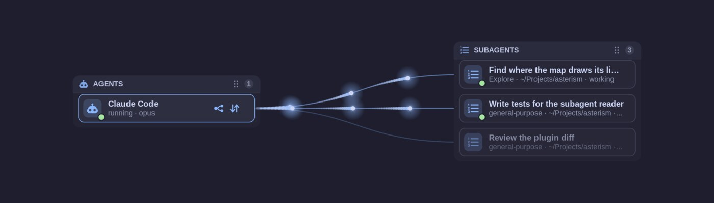

Gebruikershandleiding
Asterism
& AI Agents Map
Je AI-agents, lokale modellen, MCP-servers en skills op één kaart
Gebruikershandleiding
Je AI-agents, lokale modellen, MCP-servers en skills op één kaart
Deze handleiding beschrijft één toepassing die in twee edities bestaat:
| Editie | Asterism | AI Agents Map |
|---|---|---|
| Wat het is | Een losse GTK 4- / libadwaita-app voor elk Linux-bureaublad | Een plugin voor het Omarchy-bureaublad, geopend met een knop in de balk |
| Installeren vanuit | AUR, AppImage of de broncode | De Omarchy Plugin Marketplace |
| Uiterlijk | Volgt de lichte/donkere modus en de accentkleur van het systeem | De kleuren van het Omarchy-thema of het Adwaita-uiterlijk van GNOME |
| Map met instellingen | ~/.config/asterism/ | ~/.config/omarchy/ai-agents-map/ |
Al het andere — Setup, de kaart, verbinden door te tekenen, lokale LLM's, modellen, MCP-servers en skills — is in beide hetzelfde. Wat maar voor één editie geldt, is gemarkeerd met Asterism of Omarchy.
| Toevoegen | Een knop, tabblad of menu-item in het venster. |
|---|---|
| Instellingen › Uiterlijk | Een pad door de interface: open de instellingen, dan Uiterlijk. |
~/.agents/skills | Een bestand, map of opdracht. ~ is je persoonlijke map. |
| Ctrl+, | Een sneltoets. |
Opmerking Opmerkingen geven nuttige achtergrond.
Tip Tips tonen een snellere weg of een goede gewoonte.
Let op Let-op-kaders wijzen op iets dat moeilijk ongedaan te maken is.
Asterism toont de AI-opstelling van je computer als kaarten en als kaart: welke programmeeragents geïnstalleerd zijn, welke taalmodellen ze gebruiken — clouddiensten en lokale runtimes —, welke modellen die aanbieden en welke MCP-servers en skills elke agent heeft. En je kunt die opstelling veranderen door lijnen te tekenen.

Het hoofdvenster: de kaart over de hele breedte, erboven de GPU-kaart, in de kopbalk het ! voor open problemen.
SKILL.md) en soms scripts, die een agent een bepaalde taak leert.Elke wijziging in de instellingen van een agent wordt eerst regel voor regel getoond, voordat er iets geschreven wordt. Het oude bestand wordt als back-up bewaard, en de balk die na de wijziging verschijnt heeft Ongedaan maken. De app zelf draait nooit met beheerdersrechten; alleen het installeren van een agent die als systeempakket komt, vraagt om je wachtwoord, in een terminal die je ziet.
Kies een van deze manieren:
asterism met je AUR-helper.Asterism-<versie>-x86_64.AppImage van de releasepagina op
github.com/uBruckhaus/Asterism, maak het uitvoerbaar en start het. De AppImage gebruikt de Python 3
van je distributie met PyGObject, GTK 4 en libadwaita:
| Fedora | sudo dnf install python3-gobject gtk4 libadwaita |
|---|---|
| Ubuntu / Debian | sudo apt install python3-gi gir1.2-gtk-4.0 gir1.2-adw-1 |
| Arch | sudo pacman -S python-gobject gtk4 libadwaita |
bin/asterism uit in een kloon van de repository.De app brengt zijn eigen pictogrammen mee, dus een pictogramlettertype is niet nodig. Om agents in het venster te
laten draaien, installeer je ook VTE voor GTK 4 (vte4).
Installeer de plugin vanuit de Omarchy Plugin Marketplace of in een terminal:
omarchy plugin add https://github.com/uBruckhaus/omarchy-ai-agents-map.git --enable
Er verschijnt een robotknop in de balk. Al het andere dat nodig is, zit in een normale Omarchy-installatie. Om
agents in het venster te laten draaien, installeer je VTE: sudo pacman -S vte4.
De eerste keer dat de app opent, vraagt hij of hij zich aan de appstarter moet toevoegen. Daar wordt niets geschreven tenzij je ja zegt; je kunt het later wijzigen onder Instellingen › In de appstarter.
Het venster is een gewoon appvenster: het kan getegeld zijn, zweven, naar een andere werkruimte verplaatst worden en met Alt+Tab bereikt worden. Asterism Een nieuwe Asterism opent op zijn welkomstpagina: de agents en lokale LLM's die op deze computer geïnstalleerd zijn, zijn kaarten die al aangevinkt zijn, en Inschakelen zet ze op de kaart (zie Asterism instellen). Omarchy De knop in de balk opent het venster, haalt het naar voren of verbergt het als het al vooraan staat. Sluiten verbergt het venster; het programma blijft op de achtergrond draaien, zodat het meteen weer opent.
Opmerking Als er een agent in het venster draait, vraagt sluiten eerst: Stoppen en sluiten (dat stopt ook het lokale LLM van de agent en maakt zijn videogeheugen vrij) of Laten draaien.
Terwijl de app bij de eerste keer openen kijkt wat er op deze computer staat, toont een geanimeerde laag wat hij vindt, soort voor soort: agents, lokale LLM's, MCP-servers en skills, elk met een draaiend teken dat ✓ en een getal wordt, en hoeveel ervan nog niet verbonden zijn. Hij verdwijnt na een moment vanzelf; een klik sluit hem meteen.
Omarchy omarchy plugin remove ubruckhaus.ai-agents-map.
Asterism Verwijder het pakket of wis de AppImage.
Zet vooraf Instellingen › Lokale LLM's met hun agents starten uit, zodat ook de achtergrondbewaker verdwijnt, en Instellingen › In de appstarter om het starteritem te wissen. Wat je met de app hebt gewijzigd, blijft: instellingen van agents, MCP-servers, skills en geïnstalleerde lokale LLM's. Verwijder eerst een lokaal LLM (rechtsklik › Verwijderen…) als je wilt dat het weg is. Om ook de eigen toestand van de app te wissen:
rm -rf ~/.config/omarchy/ai-agents-map ~/.config/asterism \
~/.local/state/ai-agents-map ~/.cache/ai-agents-map
1
2
3
4
5
6
Het hoofdvenster. De nummers horen bij de lijst hieronder.
De kaart toont wat ingesteld is — geïnstalleerde agents en lokale LLM's, de MCP-servers en skillmappen die agents gebruiken, en modellen — en, vervaagd, de op deze computer gevonden MCP-servers en skillmappen die nog geen agent gebruikt, klaar om met een lijn te verbinden (zie Gevonden op deze pc). Al het andere gebeurt in Setup (de knop in de kopregel, naast Kaart), één kaart per item, in secties die inklappen met een klik op hun balk:

Setup: geïnstalleerde agents hebben een blauw kader, aangezette een ✓, updates een geel en problemen een rood label; het menu van Claude Code.

MCP-servers en skills, elke sectie met een kaart om iets toe te voegen.
Er is niets te verbergen: wat je niet op de kaart wilt, schakel je hier uit of verwijder je hier. Als een installatie of aanmelding in een terminal in het venster draait, brengt Terug (of × op het tabblad) je naar de pagina waar die begon.
Lokale MCP-servers en Online MCP-servers (die via een webadres bereikt worden) zijn twee secties. Map toevoegen… in Lokale MCP-servers en in Skills voegt een map toe waarin de app er ook naar zoekt — bijvoorbeeld een gedeelde schijf met uitgepakte apps die een MCP-server bieden, of een map met je eigen skills. De toegevoegde mappen staan naast de knop; ✕ bij een map stopt het zoeken daar (er wordt niets verwijderd). Wat erin gevonden wordt, staat vervaagd op de kaart tot een lijn het verbindt: Setup heeft alleen kaarten voor wat ingesteld is.
De kaart toont alles wat ingesteld is. De Tonen-schakelaars onder de GPU-kaart laten hele gebieden weg — bijvoorbeeld alle skills, of de lokale LLM's en hun modellen — en worden onthouden.
In een smal venster (half scherm of minder) kiest de kaart ze zelf, en een regel naast de schakelaars zegt dat: agents en aanbieders (wie via wat werkt). Een daar aangeklikte schakelaar blijft tot het venster weer volle grootte heeft en wordt niet onthouden; het venster op volle grootte houdt je eigen keuze. Meer ingeschakelde onderdelen drukken de vakken niet samen: de kaart schuift opzij.
pi -p … of
codex exec … uitvoert, bijvoorbeeld —, loopt links langs de kaart van de agents een pijl van de agent die de
andere gebruikt naar de gebruikte, met licht dat erlangs loopt; de tooltip noemt beide. Een agent kan
meerdere andere tegelijk gebruiken, elk met een eigen pijl. Zolang hij gebruikt wordt, krijgen ook de lijnen
van de gebruikte agent naar zijn provider en verder naar zijn model de kleur van de pijl, en het licht erop loopt
in die kleur: je ziet in één oogopslag welke provider en welk model voor wie werken.Tip In een smal venster (minder dan ongeveer 1300 pixels, zo'n half scherm) scrollt de kaart zijwaarts.
Als er iets te verhelpen is, verschijnt er tussen de symbolen in de kopbalk een rood !; de tooltip zegt hoeveel, bijvoorbeeld 2 open problemen · 4 suggesties. Een klik opent Open problemen: één regel per probleem — een agent die niet aangemeld is, een lokaal LLM zonder modellen, een verbinding die niet werkt, weinig vrije ruimte voor modellen — met een knop naar waar het verholpen wordt (de details van de agent of het lokale LLM, de kaart met die lijn gemarkeerd, Setup, Opruimen). Dezelfde problemen verschijnen als rood ! op hun kaarten op Setup. Tips en wat werkt staan op de kaarten en detailpagina's zelf, en waar de setup goed voor is staat op Setup (Wat je ermee kunt doen). De controle leest alleen; hij verandert, start of verstuurt nooit iets, en toont niets zolang de kaart leeg is.
Onder de problemen op dezelfde pagina somt Updates en suggesties op wat er te melden is: nieuwe programma's of skills op deze pc, wat op deze pc staat maar niet op de kaart, en updates voor geïnstalleerde agents en lokale LLM's, elk met zijn knop (MCP-server toevoegen…, Setup, Bijwerken). Als er alleen deze zijn en geen probleem, verschijnt het ! in de kopbalk in de accentkleur. Naar updates wordt op de achtergrond gezocht bij het openen van het venster, hooguit elke zes uur. Het zoeken zelf installeert niets; een update begint pas als je op Bijwerken klikt.
Met Instellingen › Dagelijkse AI-controles aan staan hier ook de updates van MCP-servers die een agent op het web vond, met Releasepagina en Doen met …; zodra de nieuwe versie op deze pc staat, biedt de regel in plaats daarvan Gebruiken… aan (zie Gevonden updates).
Elke programmeeragent heeft een kaart op Setup, geïnstalleerde met hun versie. Klik op de kaart van een geïnstalleerde agent (Asterism of ⋯ › Details), of rechtsklik op zijn vak op de kaart › Details. Bovenaan zegt een regel of de agent klaar is (en zo niet, waarom) en of hij nu draait of wanneer hij voor het laatst gebruikt is. Daaronder is elk deel een kaart die inklapt: een klik op de kop opent of sluit hem. Ze beginnen ingeklapt, elk met een samenvatting van één regel en badges; een deel dat je opent, blijft ook op de volgende detailpagina's open.

De details van een agent: elk deel ingeklapt, met samenvatting en badges.
| Kaart | Wat hij toont |
|---|---|
| Gebruik en tokens | Wat de agent bijhoudt: tokens en sessies van vandaag en de laatste zeven dagen, het abonnement, een grafiek van tokens per dag, limieten met hun resettijd en tokens per model. |
| API-kosten / API-waarde | Wat zijn tokens kosten tegen de API-prijzen van de aanbieders: vandaag, de laatste 7 en 30 dagen en per model de verdeling in invoer, uitvoer, cache lezen en cache schrijven (tokens en bedrag). API-kosten voor een agent die per token wordt betaald (met zijn deel van de daglimiet), API-waarde voor een agent met abonnement (het abonnement dekt het). Zie API-kosten. |
| Projecten, laatste 30 dagen | Per projectmap: werktijd, sessies, tokens, subagent-runs, gewijzigde regels en de API-waarde. |
| Onderwerpen (Privacy) | Waar de sessies over gingen. Dat gaat verder dan cijfers, daarom is hij gemarkeerd met Privacy en wordt hij alleen door een add-on gevuld (zie hieronder); de add-on geeft de kaart een naam en de badge zegt hoeveel hij leest. |
| Status | Elke controle van de opstelling met een ✓, of wat je hierna moet doen: aanmelden, het lokale LLM installeren of starten, een model downloaden, MCP-servers of skills toevoegen. |
| Beveiligingsinstellingen, Risicobeheer, Wat de woorden betekenen | Wat de agent mag doen zonder het je te vragen, en wat het risico verlaagt (zie Gezondheids- en beveiligingscheck). |
| Configuratie | De instellingen van de agent, MCP-servers, skills en zijn instellingenmap. |
Projecten worden getoond voor Claude Code, Codex, Pi, Oh My Pi, OpenCode, Hermes, DeepSeek Harness, Goose, Gemini CLI en OpenClaw: werktijd, sessies, tokens, subagent-runs, gewijzigde regels en wat de tokens tegen API-prijzen zouden kosten. De cijfers komen uit de eigen sessiebestanden of de database van elke agent; er wordt geen tekst gelezen.
API-kosten. De bedragen zijn een schatting: de tokenaantallen die de agent bijhoudt (invoer, uitvoer, cache lezen en cache schrijven, per model) tegen de gepubliceerde API-prijzen van de aanbieders — Anthropic, OpenAI, DeepSeek, xAI en Google, met de datum waarop ze zijn overgenomen. Een sessie telt op de dag van haar laatste antwoord; lokale modellen kosten niets. Crush houdt geen tokenaantallen bij die op te tellen zijn, dus zijn kaart toont de kosten die Crush zelf opgeeft. Voor een agent die op de pc geen tokenaantallen bijhoudt (Cursor CLI, Antigravity, Muse) zegt de kaart dat de kosten onbekend zijn; de accountpagina van zijn aanbieder heeft ze. Bedragen staan in Amerikaanse dollars, of in euro’s tegen de dagelijkse referentiekoers van de Europese Centrale Bank (Instellingen › Kosten).
Asterism Met de add-on Insights (zie Add-ons) toont de kaart Onderwerpen eerst welke onderwerpen de afgelopen 30 dagen de meeste tokens kostten (Meeste tokens: sessies met dezelfde titel zijn één onderwerp, elk met zijn aandeel in alle tokens), dan de titels die de agent zijn sessies zelf gaf, per project (Per project), en biedt Samenvatten met Claude… (als Claude Code geïnstalleerd is). De tokens komen uit de eigen sessiebestanden van de agent zonder cache-leesacties, dus ze kunnen veel lager zijn dan in Gebruik en tokens, dat cache-leesacties kan meetellen. Voordat er iets verstuurd wordt, zie je precies wat er verstuurd wordt: de titels en cijfers, nooit de gesprekken.
vte4).claude -p … gestart door een script of door een andere agent. Een
klik op een achtergrondinstantie opent een terminaltabblad dat toont wat ze schrijft, terwijl ze het schrijft:
vragen, antwoorden en de tools die ze gebruikt (uit haar sessiebestand, of haar uitvoer als die naar een
bestand gaat). Het tabblad eindigt als de instantie eindigt. Dit is de enige plek waar de app gesprekstekst
toont, en alleen voor de instantie waarop je klikt.Als agents terminals in het venster hebben, toont een rij tabbladen boven de kaart één tabblad per terminal, met een stip voor bezig, draait of beëindigd. Een klik op een tabblad toont die terminal; × sluit een beëindigde.
Een agent die ergens op de computer open is, krijgt een groene stip en draait, en het vak van het model waarmee hij draait zegt in gebruik · <agent>.
Het vak en de kaart van een draaiende agent tonen wat hij ontvangt en verstuurt (↓ in, ↑ uit). Klik op die regel, of op ⇅ in de kopbalk voor alle draaiende agents, om zijn netwerkpagina te openen: Nu, De laatste 5 minuten als grafiek (in groen, uit blauw), Waar het heen gaat — online API's, lokale LLM's, deze pc en je lokale netwerk, elk met zijn aandeel — en Programma's: de agent zelf en de programma's die hij startte, zoals zijn MCP-servers. Het wordt geteld uit de eigen TCP-verbindingen van de agent zolang de app open is (zonder beheerdersrechten; UDP wordt niet geteld) en blijft op deze pc.
Claude Code en OpenCode kunnen delen van een taak aan subagenten overlaten. Zolang een van de subagenten van een agent bezig is, toont zijn vak op de kaart naast ⇅ een klein boomteken; staan er alleen klaar zijnde in de lijst, dan is het teken gedimd. Klik erop om de pagina Subagenten van de agent te openen: een eigen kaart, ingedeeld als de grote, met de kaart van de agent links en een kaart Subagenten rechts. Elk vak toont de taak van de subagent, zijn type, de map waarin zijn sessie werkt, en bezig of … minuten geleden klaar. Op de lijnen naar de werkende loopt licht; klaar zijnde zijn gedimd. Houd de muis boven een vak om de hele taak te lezen.

De subagenten van een agent: twee aan het werk, één klaar.
Hoe lang klaar zijnde subagenten in de lijst blijven (30 minuten) en hoeveel hooguit (10), stel je in bij Instellingen › Subagenten; werkende worden altijd getoond. De pagina leest alleen het type van elke subagent en de beschrijving van één regel van zijn taak, uit de eigen bestanden van de agent (de sessiemappen van Claude Code, de database van OpenCode), nooit wat de subagenten zeggen.
Rechtsklik op een agent of een lokaal LLM › Instellen… opent zijn eigen instelling in een terminaltabblad van
het venster, voor wat de app niet zelf instelt — bijvoorbeeld hermes setup of het eigen menu van Ollama;
LM Studio opent zijn venster. Een programma zonder instelcommando toont zijn --help. Als het klaar is,
kijkt de kaart opnieuw en toont wat er veranderd is, en een draaiend lokaal LLM krijgt een herstart aangeboden.
Aanmelden… in het menu van een agent (op Setup of op de kaart) toont wat de agent nodig heeft en zijn eigen manieren om aan te melden:
claude auth login of codex login). Je wachtwoord of de aanmelding in de
browser blijft tussen jou en de agent; de app ziet het nooit. Waar de agent erom vraagt, zegt de terminal wat je moet
typen (Pi en Copilot: /login).~/.gemini/.env, alleen door jou leesbaar). Hij komt nooit in een opdrachtregel, een log of de
instellingen van de app, en de app houdt hem niet bij. De API-facturering van Claude Code is zijn eigen aanmelding bij
de Anthropic Console, dus er gaat geen sleutel door de app.
Aanmelden bij Claude Code: een abonnement of API-facturering, beide met de eigen aanmelding van Claude Code.
Daarna toont de kaart de online provider van de agent en zijn modellen.
Als er een nieuwere versie van een geïnstalleerde agent is, krijgt zijn kaart op Setup een geel
↑ versie, en Updates en suggesties (het ! in de kopbalk) noemt die. Bijwerken voert
de update uit op de manier waarop de agent geïnstalleerd is — bijvoorbeeld mise upgrade <tool>
of claude update — in een eigen terminalvenster, zodat je het kunt volgen.
Vier agents kunnen vanaf de kaart geïnstalleerd, bijgewerkt en verwijderd worden (rechtsklik op de agent › Installeren…):
goose, van de Agentic AI Foundation, voorheen Block), zijn GitHub-release
via mise. Hij werkt met veel aanbieders en met lokale LLM’s; Instellen… start
goose configure.dsh, preview voor ontwikkelaars), van npm. Hij kan lokale LLM's gebruiken.agy, Google), uit het releasemanifest van Google; de download wordt
gecontroleerd met zijn SHA-512-controlesom.Als er een agent verschijnt die de app nog niet kent, vraagt hij één keer aan een geïnstalleerde agent (Claude Code, anders Codex) om op het web uit te zoeken waar die agent zijn skills en MCP-servers bewaart. Het antwoord wordt gecontroleerd voor het gebruikt wordt, en niets ervan wordt ooit uitgevoerd. Instellingen › Nieuwe agents opzoeken zet dit uit.
Een lokale LLM-runtime draait taalmodellen op je eigen videokaart, zodat verzoeken de computer nooit verlaten. De app installeert, start en stopt ze voor je.
Rechtsklik op een grijs (niet geïnstalleerd) lokaal LLM op de kaart › Installeren…. Je kiest de programmamap, de modellenmap (voorgesteld wordt de map die je andere lokale LLM's gebruiken) en of hij bij het aanmelden start. Hij wordt alleen voor jouw gebruiker geïnstalleerd, met een gebruikersdienst, dus er is geen wachtwoord nodig. Elke download moet overeenkomen met de SHA-256-controlesom die zijn release publiceert, voordat hij uitgepakt of uitgevoerd wordt.
| Runtime | Opmerkingen |
|---|---|
| Ollama | De officiële release (met ROCm voor AMD-kaarten). |
| llama.cpp | De build van je keuze (Vulkan, ROCm, CUDA, CPU), als modelrouter: elke GGUF in de modellenmap, één tegelijk geladen. |
| LM Studio | Niet vanaf hier geïnstalleerd (geen gepubliceerde controlesom); haal hem van lmstudio.ai. Eenmaal geïnstalleerd wordt hij getoond en beheerd. |
| vLLM | Voor NVIDIA-kaarten, in een eigen Python-omgeving. |
| Jan | Zijn AppImage, uitgepakt, met de engine van Jan als achtergronddienst voor agents. |
| KoboldCpp | De officiële build in één bestand, als modelrouter. |
Zo geïnstalleerd biedt een lokaal LLM ook Bijwerken… (de vorige versie blijft als terugval bewaard), Modellenmap… en Verwijderen…, dat programma, opdracht, dienst en instellingen verwijdert, maar nooit de modellen. Lokale LLM's die je zelf geïnstalleerd hebt, worden getoond maar nooit gewijzigd.
Verbind een agent één keer met een lokaal LLM en start dan gewoon de agent — ook als de app dicht is of na een herstart. Zijn lokale LLM start mee, en als de laatste agent die het gebruikt stopt, stopt het LLM zo'n vijf seconden later, zodat zijn videogeheugen weer vrij is.
Een kleine achtergronddienst regelt dat, ai-agents-map-providers.service. Hij wordt ingesteld bij de
eerste verbinding met een lokaal LLM en verwijderd als de laatste wegvalt of als je Instellingen ›
Lokale LLM's met hun agents starten uitzet.
Opmerking KoboldCpp heeft een paar seconden nodig om te starten, langer dan sommige agents wachten. Daarom start het bij het aanmelden, en als de laatste agent stopt, wordt alleen zijn model ontladen.
Klik op de kaart van een lokaal LLM op Setup, of rechtsklik op zijn vak op de kaart › Details. Onder de tegels (modellen, agents, adres) volgen dezelfde inklapbare kaarten als bij agents: Gebruik en tokens — wat je agents er de laatste dagen doorheen stuurden, per agent en model, uit de eigen sessiecijfers van de agents en gekoppeld via de modelnaam —, dan Status, Risicobeheer, Wat de woorden betekenen en Configuratie.
In de GPU-kaart boven de kaart toont GPU-geheugen hoeveel er in gebruik is, verdeeld over lokale LLM's, bureaublad en apps, en vrij; GPU-activiteit toont belasting, temperatuur en vermogen. Het vak van elk lokaal LLM toont hoeveel geheugen het inneemt, en geladen modellen krijgen een groene stip.
Rechtsklik op een lokaal LLM voor Starten, Stoppen, starten bij aanmelden en GPU-geheugen vrijmaken: zijn modellen worden ontladen, het blijft draaien en laadt er weer een als erom gevraagd wordt.
Een lokale LLM die GPU-geheugen bezet, krijgt een rode stopknop op zijn vak. Die vraagt eerst: GPU-geheugen vrijmaken ontlaadt zijn modellen; Stoppen beëindigt hem. Bij LM Studio heet de knop Server stoppen: alleen de server stopt, de app blijft open met de modellen geladen. Een model dat een lokale LLM geladen heeft maar dat geen agent gebruikt, is met een doorgetrokken lichte lijn met hem verbonden.
LM Studio kan open zijn zonder zijn server. Zijn vak toont dan server uit met een gele stip, agents kunnen hem niet bereiken en zijn menu biedt Server starten (lms server start).
llama.cpp, LM Studio en Ollama kunnen meer dan één model geladen houden. Als je agents met verschillende modellen van één lokaal LLM verbindt, stelt de app in hoeveel het er tegelijk geladen houdt — zoveel als zijn agents gebruiken — met dezelfde voorvertoning, back-up en Ongedaan maken als de verbinding, en biedt een herstart aan als het draait, omdat het dat aantal bij het starten leest. Waar dat aantal niet aan de app is (een systeeminstallatie of je eigen startcommando), zegt een notitie waar je het instelt.
Als de modellen samen niet in het geheugen van de GPU passen, zegt een waarschuwing dat: het lokale LLM wisselt ze dan af, wat traag is, of een deel van een model draait op de processor. Het starten van een agent controleert hetzelfde: als het laden van zijn model meer GPU-geheugen nodig heeft dan er vrij is, wordt het je eerst gevraagd, met wat het geheugen nu vasthoudt — GPU-geheugen vrijmaken en dan starten, Toch starten of Annuleren.
Lokale LLM's worden niet alleen door agents gebruikt. Een plugin zoals Video Trans, een chat-app of je eigen script kan ook verzoeken sturen. De app merkt dat op en toont het:

Een programma dat niet op de kaart staat (hier curl) genereert met llama.cpp: de cyaan lijn en het vak (thema Tokyo Night). Het eigen pad van Claude Code naar opus blijft in de accentkleur.
De app kijkt welke van je eigen programma's een verbinding met het lokale LLM open hebben. Wat ze sturen, leest hij nooit. Een plugin wordt met zijn eigen naam getoond, een agent met zijn naam, al het andere met zijn programmanaam. De app zelf en LLM Monitor, die alleen de status lezen, tellen niet mee.
Opmerking Het licht is alleen te zien terwijl het programma genereert en dooft zo'n tien seconden na zijn laatste verzoek. Een programma dat open maar inactief is — Video Trans zonder spraak om te vertalen — toont niets. Een programma blijft een halve minuut na zijn laatste verzoek in het menu staan.
Rechtsklik op een geïnstalleerd lokaal LLM › Modellen…, of klik op Model toevoegen op Setup. De pagina heeft links een lijst en rechts het gekozen model, in drie tabbladen.

Ophalen van Hugging Face: wat een model kan en welke grootte in je videokaart past.
Blader door populaire GGUF-chatmodellen of zoek. Elk resultaat toont auteur, grootte, downloads, likes, leeftijd en wat het kan: Beeld, Tools, Redeneren, MTP. De pagina van het model toont parameters, architectuur, context, licentie en modelkaart. Wat de naam betekent legt de delen van de naam uit, zoals 35B-A3B of Q4_K_M.
Downloadopties geeft elke grootte met hoe ze past: in de videokaart, deels in het werkgeheugen (werkt, maar langzamer) of waarschijnlijk te groot. De beste keuze is al gemaakt; Downloaden haalt hem naar de modellenmap. Voor Ollama, dat downloadt op de naam van de grootte, worden alleen groottes aangeboden die het kan downloaden: een gesplitst bestand, een in een submap of een dat Hugging Face voor Ollama weigert, wordt gedimd, met de reden, en nooit aanbevolen.
Downloads lopen op de achtergrond en verschijnen in een strook bovenaan de hoofdpagina. Als de verbinding wegvalt, probeert hij het opnieuw en gaat hij verder. Als de app tijdens een download gesloten werd, staat die als onderbroken vermeld, met Hervatten of Weggooien.
Weet je niet welk model je moet nemen? Als er een agent voor AI-controles is ingesteld (Instellingen › Agent voor AI-controles), neemt de kaart Een agent vragen onder het zoekveld een vraag in je eigen woorden aan — bijvoorbeeld een codeermodel met een lange context dat in mijn grafische kaart past. Vragen (of Ctrl+Enter) stuurt hem, samen met je grafische kaart, het geheugen ervan, het geheugen van de computer en de modellen die je al hebt, naar die agent, die op het web zoekt; zolang hij bezig is, tonen een draaiend symbool en de verstreken tijd dat hij werkt. Na een minuut of twee toont de kaart zijn korte samenvatting, en de voorgestelde modellen verschijnen eronder in de resultatenlijst, met de kop Voorgesteld door …: elk gevonden op Hugging Face, met zijn grootte en waarom het past; een klik opent de pagina en de downloadopties zoals bij elk zoekresultaat. Een suggestie die Hugging Face niet heeft, wordt onder de kop genoemd. Hij stelt tot 10 modellen voor; Suggesties, rechts in de regel met de agent, stelt een ander aantal in (5, 10, 15 of 20). Het gebruikt de tokens van de agent; de vraag wordt niet bewaard, en de pagina van elke lokale LLM vraagt apart.

Geïnstalleerd: context nu, het beste voor je kaart en waarvoor getraind; wat de naam betekent; Verwijderen.
Elk model toont grootte, bestand en context — nu, het beste voor je kaart en getraind voor. Verwijderen vraagt eerst en verplaatst de bestanden naar de prullenbak, waaruit je ze kunt terugzetten. Een model dat alleen een koppeling is, verliest alleen de koppeling.
De context is hoeveel tekst het model in één keer kan overzien. De app berekent uit het modelbestand zelf de grootste context die in je videokaart past. Context instellen schrijft die in de instellingen van het lokale LLM, met back-up en Ongedaan maken. Agents hebben een vrij grote context nodig; als je een agent verbindt met een LM Studio-model zonder ingestelde context, wordt in dezelfde stap de beste ingesteld.
Toont GGUF-bestanden die het lokale LLM nog niet leest — in zijn modellenmap, in de mappen van de andere lokale
LLM's, in ~/Downloads en in ~/Models. Toevoegen maakt er zijn model van zonder tweede
kopie (via een koppeling), behalve bij Ollama, dat een eigen kopie importeert.
Rechtsklik op een model van llama.cpp, KoboldCpp of LM Studio › Verplaatsen naar…, of sleep het modelvak naar de map van een ander lokaal LLM. Eerst zie je hoeveel er verplaatst wordt en welke agent het model gebruikt. Ongedaan maken zet de bestanden terug. Verwijderen… vraagt eerst en verplaatst de bestanden naar de prullenbak.
Instellingen › Modellenmap stelt één map in voor de modellen van alle lokale LLM's.
Modellen opruimen… laat vooraf zien hoe de bestanden gesorteerd zouden worden
(<map>/<uitgever>/<model>/), en er verandert niets tot je op Opruimen drukt. Met
Oude paden blijven werken (standaard aan) blijft er op elke oude plek een koppeling. Laatste opruimactie
ongedaan maken zet alles terug.
Let op Bij verplaatsen naar een andere schijf worden de modellen eerst gekopieerd en de originelen pas verwijderd als de kopie compleet is. Zorg dat er genoeg vrije ruimte op het doel is; anders weigert de app het verplaatsen.
Druk op een vak van de kaart en sleep naar een ander om ze te verbinden. Elke wijziging toont vóór het schrijven precies welke regels van welk bestand veranderen, maakt een back-up en kan via de balk die volgt ongedaan gemaakt worden.
Sleep van een agent naar een lokaal LLM of andersom. Kies het model en of de agent het meteen gebruikt. Om een verbinding te wijzigen, selecteer je de agent (of klik je op de lijn): elke lijn die verplaatst of verwijderd kan worden, toont aan het uiteinde een oranje haak. Sleep de haak naar een ander lokaal LLM — of naar een lege plek om hem te verwijderen; met de muis boven een haak zie je wat slepen doet. Met een agent geselecteerd maakt een klik op een model van een verbonden lokaal LLM dat model het model van de agent.
Ondersteunde agents: Hermes, Pi, Oh My Pi, OpenCode, OpenClaw en DeepSeek Harness.
Sleep van een agent naar een MCP-server. De instellingen van de server worden overgenomen in het eigen formaat van die agent. Ondersteund: Claude Code, Codex, Copilot, Crush, Cursor, Gemini, Goose, Grok, Hermes, Muse, Oh My Pi, OpenClaw, OpenCode en Pi. Instellingenbestanden die sleutels kunnen bevatten, worden altijd zo geschreven dat alleen jij ze kunt lezen.
Sleep van een agent naar een skillmap. Pi en Hermes krijgen de map in hun instellingen; elke andere agent krijgt per
skill een koppeling in zijn eigen skillmap. Een map die een agent uit zichzelf leest (de meeste lezen
~/.agents/skills) kan niet alleen bij die agent weggehaald worden.
Telkens als het venster opent (en met Vernieuwen) zoekt de app op deze computer naar
MCP-servers en skillmappen, zonder iets te starten: programma's die een MCP-server bieden in
~/.local/bin, ~/Applications, /opt en de in Setup toegevoegde
mappen, en skillmappen die apps meebrachten of die in een toegevoegde map staan. Wat nog geen agent
gebruikt, staat op de kaart als een vervaagd vakje zonder lijnen. Niets wordt vanzelf verbonden.
De MCP-server van een app draait zelfstandig: het venster van de app hoeft niet open te zijn. Programma's in een AppImage die nog niet uitgepakt is, staan niet op de kaart; MCP-server toevoegen › Op deze pc pakt ze eerst uit.
Tip Zet apps met een MCP-server en je eigen skills elk in één map — bijvoorbeeld op een schijf die meerdere systemen delen — en voeg die mappen toe in Setup. Voeg op een andere computer daar dezelfde mappen toe, en alles erin staat ook op diens kaart.
Direct nadat een verbinding geschreven is, controleert de app of ze zal werken: of een lokaal LLM geïnstalleerd is en het model aanbiedt, of een MCP-server antwoordt, of de skillkoppelingen intact zijn. Een mislukte verbinding blijft op de kaart als rode stippellijn met een !; een met alleen waarschuwingen is geel gestippeld. Klik op de lijn of het ! voor tips:
MCP-servers geven agents extra tools. + MCP-server op de kaart of onder de kaarten opent de pagina om er een toe te voegen: links een lijst, rechts de pagina van de gekozen server.
| Tabblad | Inhoud |
|---|---|
| Aanbevolen | De referentieservers van het MCP-project (Filesystem, Fetch, Git, Memory, Sequential Thinking, Time, Everything) en officiële servers van bekende bedrijven (GitHub, Playwright, Chrome DevTools, Brave Search, Context7), gegroepeerd naar doel en vastgezet op hun nieuwste versie. |
| MCP-register | Een zoekopdracht in het officiële MCP-register. Elk resultaat noemt zijn uitgever zoals het register die heeft gecontroleerd. Het zoeken kan tien seconden of langer duren. De resultaten komen per 20; de regel onder de lijst bladert erdoor en toont waar je bent, bijvoorbeeld ‹ Vorige 20 · 21 – 40 / 200 · Volgende 20 › (met / 40+ als het register niet zegt hoeveel het er zijn). |
| Op deze pc | Programma's op deze computer die een MCP-server aanbieden, gevonden door hun bestanden te lezen — er wordt niets gestart. In AppImages wordt alleen gekeken als je op Binnenin kijken… klikt. |
| Met de hand | Een opdrachtregel of een webadres met headers. |
Weet je niet welke server je nodig hebt? Op het tabblad MCP-register neemt de kaart Een agent vragen onder het zoekveld een verzoek in je eigen woorden aan — bijvoorbeeld mijn Notion-pagina's lezen en schrijven. Vragen (of Ctrl+Enter) laat de agent voor AI-controles er een paar zoekwoorden van maken; de app doorzoekt daarmee de gedownloade registerlijst, zoals de gewone zoekfunctie, en de agent kiest uit wat gevonden is de passende servers, elk met de reden. Hij zoekt niet op het web, ziet alleen je verzoek en de openbare registerteksten van de servers en kan alleen servers kiezen die echt in de lijst staan. Een draaiend symbool en de verstreken tijd tonen dat hij bezig is; na enkele seconden tot een minuut verschijnen de suggesties in de resultatenlijst, tot 10 (Suggesties rechts in de regel met de agent: 5, 10, 15 of 20). Een zoekopdracht die je daarna typt, vervangt ze.
Op deze pc zoekt ook in de mappen die met Map toevoegen… zijn toegevoegd onder Setup
› Lokale MCP-servers: in elke map zelf en in de app-mappen erin, zoals
photocraft-0.16.0/usr/bin.
De pagina van de server zegt wie hem gemaakt heeft en hoe goed dat gecontroleerd is, wat hij doet (met dingen die je
een agent kunt vragen), hoe hij draait — als programma via npx, uvx of Docker, of als webdienst
— en wat hij nodig heeft, zoals een map of een API-sleutel met een link waar je die krijgt. Daaronder Instellen:
Opmerking Geheime waarden, zoals API-sleutels, worden in de omgeving of in headers meegegeven, nooit in een opdrachtregel waar andere gebruikers van de computer ze zouden kunnen lezen. Een server die een geheim in zijn opdrachtregel nodig zou hebben, moet met de hand ingesteld worden.
ⓘ Details op de kaart van een MCP-server toont het instellingenbestand van elke agent, de opdracht of het adres en, op verzoek, de tools van de server; waarden van sleutels worden nooit getoond. Verwijderen haalt hem bij alle agents weg. Servers blijven in de lijst als geen agent ze meer gebruikt, zodat een lijn ze weer kan verbinden.
Als er in ~/Applications een nieuwere versie verschijnt van een app die een MCP-server levert, meldt een
tip dat. Bijwerken… pakt de nieuwe versie uit, richt elke agent erop en bewaart de oude zeven dagen als back-up.
Op updates controleren (onder Op deze pc) doet dat na je klik voor al zulke apps tegelijk: het kijkt in de
nieuwe versies, biedt alle updates aan in één voorbeeld met een back-up en een Ongedaan maken, en test daarna elke
bijgewerkte server; een tip noemt elke server die niet antwoordt.
Een skill is een map met instructies die een agent een bepaalde taak leert. + Skills opent een pagina die net zo is opgebouwd als de MCP-pagina.
~/.agents/skills.Let op Skills kunnen scripts bevatten die een agent later kan uitvoeren. De pagina toont de repository en somt de scripts op voordat er iets opgehaald wordt — bekijk ze.
Op deze pc zoekt ook in de mappen die met Map toevoegen… zijn toegevoegd onder Setup › Skills.
Elke kaart van een skillmap toont zijn skills en de agents die hem lezen. Een map die via koppelingen gedeeld wordt, verschijnt één keer, waar hij echt staat. ⓘ Details geeft elke skill met zijn beschrijving en hoe elke agent de map krijgt.
Het tandwiel (Ctrl+,) opent de instellingen. Backspace of Esc gaat terug.
| Instelling | Wat ze doet |
|---|---|
| Taal | De systeemtaal of English, Deutsch, Français, Español, Italiano, Português, Nederlands, Polski. |
| Uiterlijk Omarchy | De kleuren van het Omarchy-thema of het Adwaita-uiterlijk van GNOME met de lichte/donkere modus en accentkleur van het systeem. |
| Kaartanimaties | Licht loopt langs de lijnen van de kaart: Agents en andere programma's (de lijn van een agent die werkt en de lijn van een lokaal LLM naar een model dat een ander programma gebruikt), Alleen mijn agents of Uit. Een kleine geanimeerde kaart onder de instelling toont wat elke keuze beweegt. |
| Gebruiksstatistiekvak | De getallen langs de lijn van een werkende agent (zie Werken met de kaart): aan of uit, welke van Tokens per seconde, Contextgrootte en Context gebruikt het toont, en de Tekstgrootte (standaard 7 pt). |
| Subagenten | Voor de pagina Subagenten: hoe lang klaar zijnde subagenten blijven (30 minuten standaard; 10, 30, 60 of 120) en hoeveel hooguit (10 standaard; 5, 10, 20 of 40). Werkende worden altijd getoond. |
| Kosten | Valuta: Amerikaanse dollar, of euro tegen de dagelijkse referentiekoers van de Europese Centrale Bank (één keer per dag opgehaald van ecb.europa.eu). Daglimiet voor een agent die per token wordt betaald (standaard 100; 10 tot 500). Geel vanaf en Rood vanaf: het verbruikte aandeel waarbij een kostenaanduiding of een batterij geel wordt (standaard 75 %) en rood (90 %). Melden bij rood (standaard aan): een bureaubladmelding als een agent rood wordt — één keer per limiet tot die wordt teruggezet, of één keer per dag voor kosten. |
| Terminaltabbladen boven de kaart | Eén tabblad per agentterminal in het venster. |
| Hoeken | Zoals de vensters, afgerond of recht. |
| Lokale LLM's met hun agents starten | De achtergrondbewaker uit Starten en stoppen met de agents. |
| In de appstarter | Het item in de starter; uit verwijdert het. |
| Agents starten in | De map waarin agents starten. |
| AI-functies: Nieuwe agents opzoeken | Een geïnstalleerde agent vragen waar een onbekende agent zijn instellingen bewaart (standaard aan). |
| AI-functies: Dagelijkse AI-controles | Eén keer per dag zoekt een agent op het web naar nieuwe versies van je MCP-servers (standaard uit; het gebruikt de tokens van de agent). Zie Smart Check. |
| AI-functies: Agent voor AI-controles | Claude Code of Codex: doet de AI-controles en het opzoeken en neemt de taken Doen met … en Oplossen met … op zich. |
| Modellenmap | Eén map voor alle modellen, met Modellen opruimen…. |
| Add-ons Asterism | Online naar add-ons zoeken, de add-onpagina en Setup. |
| Over | De versie, de auteur en de licentie; Website opent het project op GitHub en Probleem melden zijn lijst met issues. |

Instellingen › Over.
? (F1) opent de hulp: Handleiding openen opent deze handleiding (de editie die bij je versie hoort, in jouw taal) in je pdf-viewer; Schijfruimte (hieronder); een animatie over instellen door te tekenen; en LLM Monitor, een bijbehorende balkplugin die toont wat een lokaal LLM doet (een kleine animatie van zijn balkitem en paneel). Beide animaties worden in de kleuren van je thema getekend en volgen een themawissel meteen. De legenda ⓘ in de kopregel legt elke stip, lijn en markering op de kaart uit.
De gevulde i in de kopbalk opent Informatie: kaarten voor de andere plugins van de auteur, gelezen uit de Omarchy Plugin Marketplace als de pagina opent, hooguit eens per uur (zonder netwerk de lijst die deze versie kent). Een klik op een kaart opent de pagina van de plugin in de marketplace.
Schijfruimte: agents, lokale LLM's en modellen toont hoeveel ruimte je AI-opstelling inneemt en waar. Ze wordt op de achtergrond gemeten telkens als de hulp opent (opnieuw na tien minuten of met Opnieuw meten) en alleen gelezen — vanaf hier wordt niets gewist. De kop toont altijd de totalen op één regel (Agents · Lokale LLM's · Modellen · Totaal); een klik klapt de sectie in. Schijven, Agents, Lokale LLM's en Modelmappen beginnen ingeklapt, elk met hun totaal en de grootste items; een klik opent ze.

De totalen, het AI-deel van alle schijfruimte en de ingeklapte secties met hun totalen.
mise prune, dat
de ongebruikte verwijdert. Een modellenmap zegt welke lokale LLM's hem gebruiken, of dat hij alleen koppelingen naar
modellen in een andere map bevat.Tip Programma's kun je opnieuw installeren en modellen opnieuw downloaden; de gegevens van agents bevatten je sessies en instellingen. Als de ruimte krap wordt, kijk dan eerst naar oude programmaversies en modellen die je niet meer gebruikt.
Groottes zijn schijfruimte: een bestand dat op twee plekken staat, telt één keer, en koppelingen worden niet gevolgd.
Met Smart Check laat je een geïnstalleerde online agent — Claude Code of Codex — naar de AI-opstelling van deze pc kijken, updates voor je MCP-servers zoeken en reparaties voor je uitvoeren, en zie je wat dat aan tokens kostte. De twee sterretjes in de kopbalk openen het; ze verschijnen alleen zolang een van deze agents geïnstalleerd is. Instellingen › Agent voor AI-controles kiest welke.

Smart Check na een controle door Claude Code: problemen (!), tips (·) en wat goed is (✓).
Op eigen risico De bevindingen, antwoorden en wijzigingen van een agent kunnen fout, onvolledig of verouderd zijn. Lees wat hij voorstelt voordat je met een stap instemt, en houd back-ups bij. Zijn opzoekingen en taken gebruiken je tokens of de limieten van je abonnement. De app geeft geen garantie voor wat een agent doet. Dezelfde opmerking staat boven Instellingen › AI-functies.
Nu controleren geeft de agent een korte tekst over de opstelling — de grafische kaart en het geheugen, de agents met hun modellen, de lokale LLM's, de MCP-servers met hun versies, de skills en wat Open problemen vond — en laat hem dingen op het web opzoeken. Er staan geen sleutels, headers of waarden van instellingen in. Het duurt een minuut of langer op de achtergrond; de regel onder de knop zegt hoeveel tokens de laatste controle gebruikte. Het antwoord is een korte samenvatting en een lijst met bevindingen: ! problemen, · tips en ✓ wat goed is. Antwoorden die niet kloppen, worden weggelaten.
Oplossen met … naast een probleem of tip opent de agent in een terminaltabblad in het venster met die bevinding als taak: hij kijkt of het zo is, legt het uit en vraagt je vóór elke stap die iets verandert. MCP-servers naar een nieuwe versie overzetten blijft over aan Bijwerken van de app (hieronder), dat de instellingen van alle agents in één keer wijzigt, met een back-up en Ongedaan maken.
Nieuwe versies van je MCP-servers, uit twee bronnen:
~/Applications/<app>-<version>/ en npm- of PyPI-pakketten
die op een versie vastgezet zijn. Nu controleren op deze kaart vraagt het meteen, ook als de dagelijkse
controles uit staan. Elke vondst heeft Releasepagina en Doen met …: de agent downloadt de nieuwe
AppImage in een terminaltabblad en vraagt vóór elke stap.Zodra de nieuwe versie op deze pc staat, zegt de regel dat en biedt hij Gebruiken… aan: het updatevoorbeeld toont welke agents ernaar overgaan; Bijwerken wijzigt ze allemaal, bewaart de oude versie bij de back-up en test daarna elke server. Een server waarvan alle agents de nieuwe versie starten, verdwijnt uit de lijst.
Tip Na een actie die hier begon — een update, of een taak in een terminaltabblad — brengt Terug je weer bij Smart Check, bijgewerkt.
Tokens die vandaag en in de laatste 30 dagen gebruikt zijn, een grafiek per dag en de totalen per agent en per plugin (andere Omarchy-plugins die dezelfde AI-helper gebruiken, verschijnen hier ook). API-waarde is wat de runs tegen API-prijzen zouden kosten, en de regel eronder zegt of je abonnement het dekt of dat het op een API-sleutel wordt aangerekend. Een taak in een terminaltabblad telt mee in de eigen sessie van zijn agent; de detailpagina van de agent toont die tokens.
Daaronder één kaart per soort taak — de controle van de opstelling, updates van MCP-servers, nieuwe agents opzoeken, reparaties — met de runs, tokens en de laatste resultaten.
Een programmeeragent leest en schrijft bestanden en voert opdrachten uit op je computer. Hoeveel hij mag doen zonder het je te vragen, staat in zijn eigen instellingen, met andere woorden voor elke agent. De Gezondheids- en beveiligingscheck brengt dat samen: op de detailpagina van elke agent en elk lokaal LLM tonen vier kaarten of hij werkt, wat hij mag, wat dat in gewone woorden betekent en wat het risico verlaagt.

De beveiligingsinstellingen van OpenCode met Opdrachten uitvoeren geopend, en het begin van zijn risicobeheer.
De badges op de ingeklapte kaarten vatten het samen: Gezond, Even nakijken of Niet ingesteld bij Status, en Laag risico, Gemiddeld risico of Hoog risico bij Beveiligingsinstellingen en Risicobeheer. Open een kaart voor de details:
| Kaart | Wat hij toont |
|---|---|
| Status | Elke controle van de opstelling met een ✓, of wat je hierna moet doen: geïnstalleerd, aangemeld, zijn model en lokale LLM, MCP-servers en skills. |
| Beveiligingsinstellingen | De instellingen van de agent die bepalen wat hij zelfstandig mag, elk met de huidige waarde en een zin over wat die betekent. Het teken ervoor geeft het risico: ✓ veilig, · laag, een geel ! gemiddeld, een rood ! hoog. |
| Risicobeheer | Wat de instellingen samen betekenen, het ernstigste eerst, elk met de reden en → wat het verlaagt. Bestaande beveiligingen staan erbij met een ✓. |
| Wat de woorden betekenen | Sandbox, goedkeuring, toestaan- en weigerregels en de andere woorden van de kaarten, uitgelegd (zie De woorden uitgelegd). |
Toestaan- en weigerregels en vertrouwde mappen van de agent (bijvoorbeeld de lijst permissions.allow van
Claude Code) staan onder de instellingen, één regel per lijn.
Opmerking Alleen die ene sleutel verandert; commentaar en al het andere in het bestand blijft zoals het is. Een instelling die meer dan één regel in een bestand vraagt — zoals Hermes die zijn opdrachten in Docker uitvoert — wordt getoond en uitgelegd, met waar je haar wijzigt, maar niet vanaf hier gewijzigd.
| Agent | Getoonde en wijzigbare instellingen | Bestand |
|---|---|---|
| Claude Code | Toestemmingsmodus (Eerst vragen, Alleen plannen, Alleen toegestane, Bewerken zonder vragen, Automatische controle, Alle controles overslaan), sandbox voor opdrachten, omzeilmodus vergrendelen; toestaan-/vragen-/weigerregels | ~/.claude/settings.json |
| Codex | Wanneer Codex vraagt, sandbox (alleen lezen, projectmap, geen), netwerk in de sandbox; vertrouwde mappen | ~/.codex/config.toml |
| GitHub Copilot | Toestemmingsmodus (Eerst vragen, Automatische controle, Alles toestaan); vertrouwde mappen, sites zonder vragen | ~/.copilot/settings.json |
| Cursor CLI | Goedkeuring, sandbox, netwerk in de sandbox, webzoeken zonder vragen; toestaan-/weigerregels | ~/.config/cursor/cli-config.json |
| Hermes | Gevaarlijke opdrachten (altijd vragen, automatische controle, nooit vragen), geheimen verbergen; waar opdrachten draaien (alleen getoond) | ~/.hermes/config.yaml |
| OpenCode | Vragen, toestaan of nooit voor bestanden bewerken, opdrachten uitvoeren, webpagina's ophalen en werken buiten het project | ~/.config/opencode/opencode.json |
| Pi | Zijn tools: lezen, schrijven en opdrachten uitvoeren, of alleen lezen. Pi vraagt bewust nooit, dus zijn tools zijn zijn rechten. | ~/.pi/agent/settings.json |
Voor andere agents toont de kaart hun status en MCP-servers en zegt ze waar je in de eigen instellingen van de agent
moet kijken. Voor een lokaal LLM toont ze wie het kan bereiken: alleen deze pc (127.0.0.1, zoals het
hoort) of elk apparaat in je netwerk.
Het risiconiveau is het ernstigste punt dat de kaart vindt:
Goede gewoonten, ongeacht de instellingen:
git status) toe met een toestaanregel in plaats van de hele shell.127.0.0.1: hun servers hebben geen wachtwoord.Let op Een automatische controle (de modus auto van Claude Code, assisted van Copilot, auto-review van Cursor, smart van Hermes) is een tweede AI die elke stap beoordeelt. Dat scheelt vragen, maar het is een oordeel, geen muur.

Wat een sandbox verandert: opdrachten bereiken alleen de projectmap en wat jij toestaat.
0.0.0.0 is bereikbaar vanaf elk apparaat in je netwerk.Alles wat Asterism van een agent of een LLM-provider begrijpt, is een adapter: hoe hij gevonden en geïnstalleerd wordt, zijn sessies, beveiligingsinstellingen, MCP-servers en skills. In Asterism is elke adapter een add-on: de pakketten brengen ze allemaal mee, ondertekend en uitgeschakeld, en jij schakelt in wat je gebruikt. Add-ons brengen ook nieuwe agents, nieuwe providers en functies die verder gaan dan cijfers, zoals Insights (sessieonderwerpen en een samenvatting door Claude). De plugin AI Agents Map heeft de adapters ingebouwd en geen add-ons.
Een nieuwe Asterism opent op zijn welkomstpagina. Elke agent en elk lokaal LLM dat Asterism kent, is een kaart met een eigen pictogram, in drie groepen: AI-agents, Lokale LLM's en Online providers (de namen van Anthropic, OpenAI en de anderen op de kaart). Elke kaart zegt of het programma hier is:

De welkomstpagina: gevonden programma's staan eerst en zijn aangevinkt.
Klik op een kaart (of druk er Spatie op) om haar aan of uit te vinken; een aangevinkte kaart heeft een blauwe rand en een vinkje. Inschakelen (met het aantal aangevinkte kaarten) laadt ze en toont de kaart; heb je programma's aangevinkt die niet geïnstalleerd zijn, dan opent Setup: ⋯ op hun kaarten › Installeren…. Later begint met een lege kaart. Zolang er niets ingeschakeld is, opent Asterism bij elke start weer op de welkomstpagina. Daarna staan dezelfde kaarten op Setup (de knop in de kopregel), waar agents en providers op elk moment in- en uitgeschakeld worden.
Open haar met de puzzelstukknop in de kopregel, via Instellingen › Add-ons of via elke tip „add-on beschikbaar". Ze toont, in inklapbare groepkaarten die open beginnen:

Geïnstalleerde add-ons: aan of uit, met Installeren en Verwijderen voor het programma.
De kaart van een ingeschakelde agent of een ingeschakeld lokaal LLM heeft Installeren en Verwijderen voor het programma zelf (wat niet van toepassing is, is grijs), en elke kaart met een homepage heeft een wereldbolknop die hem in je browser opent.
Het zoeken vindt namen, beschrijvingen en wat een add-on leest; de filters erboven beperken de lijst tot agents, providers, functies, de geïnstalleerde of die met een update. Klik op een kaart voor de details: wat hij leest, wat hij verstuurt, wat hij mag en zijn privacyniveau.
Installeren (of Add-on ophalen) toont eerst wat de add-on leest, verstuurt en mag; pas na jouw OK wordt hij gedownload, gecontroleerd en ingeschakeld. Uitschakelen en Inschakelen werken direct, zonder herstart: zijn agents, providers, secties en kaarten verschijnen of verdwijnen overal. Bijwerken vervangt hem door de nieuwere versie uit de catalogus, nadat de nieuwe gecontroleerd is; Verwijderen verplaatst hem naar de prullenbak. Uit bestand installeren… neemt een add-on-zip die je zelf gedownload hebt; dezelfde controles gelden.
Alleen van de auteur. Asterism laadt alleen add-ons die ondertekend zijn door Uwe Bruckhaus
(vingerafdruk van de sleutel SHA256:e5cC634Ke3Our5LAeSc88qs22NKZEHTncBW5Ig3amWQ). Voordat er iets van een
add-on draait, wordt de handtekening gecontroleerd met ssh-keygen van OpenSSH, wordt elk bestand vergeleken
met zijn SHA-256-controlesom en mag er geen bestand bijgekomen zijn. Een download moet bovendien overeenkomen met de
SHA-256-controlesom in de ondertekende catalogus.
| Niveau | Wat de add-on mag lezen of versturen |
|---|---|
| Alleen cijfers | Aantallen, tijden, tokens, gewijzigde regels, kosten — wat Asterism zonder add-ons toont. |
| Sessietitels | De titels die een agent zelf aan zijn sessies gaf (nooit de gesprekken). |
| Titels en een samenvatting door Claude | Die titels en cijfers, verstuurd naar je eigen Claude Code — alleen op een klik, na een voorbeeld van precies wat er verstuurd wordt. |
Een add-on kan nooit meer doen dan zijn niveau toestaat. Een agent of provider toevoegen of een programma installeren zijn aparte rechten die de kaart noemt.
| Soort | Wat hij meebrengt |
|---|---|
| Agent | Een programmeeragent: waar hij zijn instellingen, sessies, MCP-servers en skills bewaart, hoe hij geïnstalleerd wordt en hoe hij aanmeldt. Al het andere bouwt Asterism daaruit — de kaart op Setup, zijn vak op de kaart, Gebruik en tokens, Projecten, Status en Beveiliging. |
| Provider | Een lokaal LLM-programma of de online providers: hoe het gevonden en geïnstalleerd wordt en hoe agents het bereiken. Asterism bouwt zijn kaart, zijn vak op de kaart en zijn detailpagina — inclusief Gebruik en tokens: wat je agents erdoorheen stuurden, uit hun eigen sessiecijfers. |
| Uitbreiding | Meer gegevens over een agent of provider die een andere add-on meebrengt, zonder die te vervangen — bijvoorbeeld zijn abonnement en limieten, of een kaart op zijn detailpagina. Ze vult alleen in wat de add-on van de agent leeg laat; de pagina van de add-on zegt wat ze toevoegt en wat daarvan niet gebruikt wordt. |
| Functie | Iets over meerdere agents heen, zoals Insights (de kaart Onderwerpen). |
De sectie van een add-on op de detailpagina van een agent of lokaal LLM komt in de kaart waar ze over gaat: Gebruik en tokens, Status, Onderwerpen (alleen bij agents) of een eigen kaart met zijn naam.
Een agent-add-on beschrijft zijn agent als gegevens (een bestand met de naam agent.toml);
de meeste brengen helemaal geen code mee, en de pagina van de add-on zegt dat: Brengt geen code mee of,
voor de paar agents die iets nodig hebben (zoals hun eigen sessiedatabase), Gegevens over de agent, en wat
code voor wat gegevens niet kunnen zeggen.
Als je een agent installeert die Asterism nog niet kent, kijkt het in de catalogus (Instellingen › Online naar add-ons zoeken, standaard aan: de lijst wordt om de paar uur van GitHub gelezen en alleen het verzoek wordt verstuurd). Kent een add-on die agent, dan zegt Updates en suggesties (het ! in de kopbalk) dat („Kilo Code staat op deze pc maar niet op de kaart"), en verschijnt er een kaart onder Voorgesteld voor deze pc; een klik installeert hem. Is er nog geen add-on, dan zeggen de details van de agent dat, met een link om er een aan te vragen.
Een nieuw lokaal LLM of een nieuwe agent heeft alleen een add-on nodig: Asterism bouwt zijn kaart, zijn
vak en lijnen op de kaart, zijn details, de pagina Modellen en de pagina Beveiliging uit wat de add-on
erover zegt. Kun je een beetje programmeren, begin dan met de sjablonen in de repository van Asterism
(templates/, uitgelegd in docs/addons.md): één bestand voor een lokaal LLM, een
bestand met feiten voor een agent. Stuur de add-on naar github.com/uBruckhaus/asterism-addons;
zodra hij is nagekeken en ondertekend, staat hij voor iedereen onder Beschikbaar.
sudo in een terminal die je ziet, nadat je de opdracht te zien kreeg.De README in elke repository somt volledig op wat er gelezen, gestart en geschreven wordt.
| Probleem | Wat te doen |
|---|---|
| De kaart is krap of afgesneden. | Het venster is smaller dan ongeveer 1300 pixels. Maak het venster breder, of zoom uit (Ctrl+−). |
| Een vak dat ik verwacht, staat niet op de kaart. | De kaart toont alleen wat ingesteld is: kijk op Setup (een uitgeschakelde add-on, een MCP-server die geen agent gebruikt) en bij de Tonen-schakelaars. |
| Hier starten ontbreekt of doet niets. | Installeer VTE voor GTK 4 (vte4), of gebruik In terminal starten. |
| Een lijn is rood gestippeld. | Klik erop voor tips, los op wat ze zeggen en dan Opnieuw testen. Zie Als een verbinding mislukt. |
| Het lokale LLM start niet met de agent. | Controleer Instellingen › Lokale LLM's met hun agents starten en of de agent op de kaart verbonden is. systemctl --user status ai-agents-map-providers toont de bewaker. |
| Het gekleurde licht van een lokaal LLM naar zijn model verschijnt niet. | Het verschijnt alleen terwijl een programma dat niet op de kaart staat met dat LLM genereert, en dooft zo'n tien seconden na zijn laatste verzoek. Controleer of de kaart zichtbaar is (een breed venster), of het programma echt iets verstuurt en of Instellingen › Kaartanimaties op Agents en andere programma's staat. |
| De agent antwoordt slecht of breekt af met een lokaal model. | De context is misschien te klein. Open het model onder Modellen… › Geïnstalleerd en gebruik Context instellen met de beste waarde voor je kaart. |
| Een download is gestopt. | Na een verbroken verbinding gaat hij zelf verder. Na een herstart gebruik je Hervatten in de strook bovenaan. |
| Ik wil een eerdere wijziging ongedaan maken. | Back-ups staan in ~/.local/state/ai-agents-map/backups/. |
| F1 | Hulp |
|---|---|
| Ctrl+, | Instellingen |
| F5 | Vernieuwen (de kaart en Setup) |
| Ctrl++ / Ctrl+− / Ctrl+0 | De kaart in- en uitzoomen, terug naar 100 % |
| Ctrl+scrollen | De kaart zoomen |
| Shift+klik | Aan de selectie toevoegen of eruit halen |
| Esc | Selectie wissen; terug van een pagina |
| Backspace | Terug van een pagina |
| Pad | Inhoud |
|---|---|
~/.config/asterism/ Asterism~/.config/omarchy/ai-agents-map/ Omarchy | Instellingen, de lijst met MCP-servers, opgezochte agents, mislukte verbindingen. |
~/.local/state/ai-agents-map/backups/ | Back-ups van elk bestand dat de app heeft gewijzigd. |
~/.local/state/ai-agents-map/jobs.json | Onderbroken downloads en installaties. |
~/.local/state/ai-agents-map/reorganize.json | Het logboek van de laatste opruimactie, voor Ongedaan maken. |
~/.cache/ai-agents-map/ | Zoekresultaten, toollijsten, updatecontroles, de laatste Smart Check (smart-check.json) en de MCP-updates van de AI-controles (mcp-updates.json). |
~/.local/state/omarchy-plugin-ai/runs.json | De AI-opzoekingen en -taken van deze app en andere plugins, met hun tokens: de statistiek van Smart Check. |
~/.config/systemd/user/ai-agents-map-providers.service | De bewaker die lokale LLM's met hun agents start. |